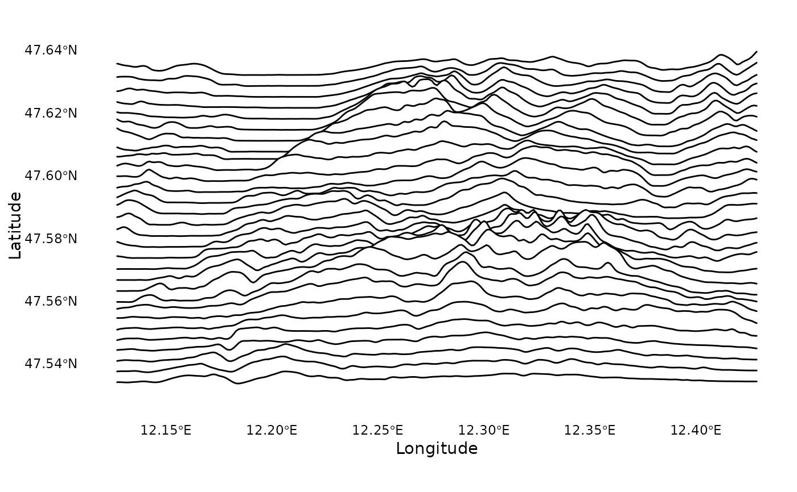

Plot elevation data as ridgelines
plot_ridgelines.RdCreates topographical elevation ridgeline plots, inspired by the iconic Joy Division album cover.
Usage
plot_ridgelines(
elevation = NULL,
n_lines = 30,
scale_factor = 10,
line_color = "white",
fill_color = "#FFFFFF1A",
linewidth = 0.5,
background_color = "black"
)Arguments
- elevation
A raster object containing elevation data, as returned by get_elevation()
- n_lines
Number of ridgelines to draw (default: 30). More lines create a denser visualization but may increase plotting time.
- scale_factor
Scaling factor for the height of ridgelines (default: 10). Higher values make the elevation differences more pronounced.
- line_color
Color of the ridgelines (default: "white")
- fill_color
Fill color below the lines (default: "#FFFFFF1A", semi-transparent white)
- linewidth
Width of the ridgelines (default: 0.5)
- background_color
Background color of the plot (default: "black")
Examples
# Default style (white on black)
plot_ridgelines(ele_wilder_kaiser)
# No fill, just lines
plot_ridgelines(
ele_wilder_kaiser,
fill_color = NA,
scale_factor = 12
)
# Classic black on white style
plot_ridgelines(
ele_wilder_kaiser,
line_color = "#000000",
fill_color = "white",
background_color = "white",
scale_factor = 8
)

# Get creative!
plot_ridgelines(
ele_wilder_kaiser,
n_lines = 35,
line_color = "#FF4081",
fill_color = "#FF408133",
background_color = "#1A237E"
)